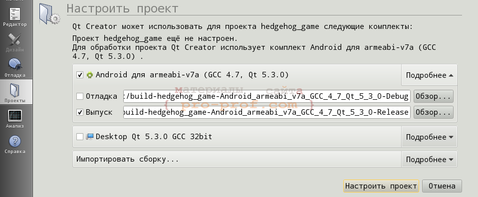
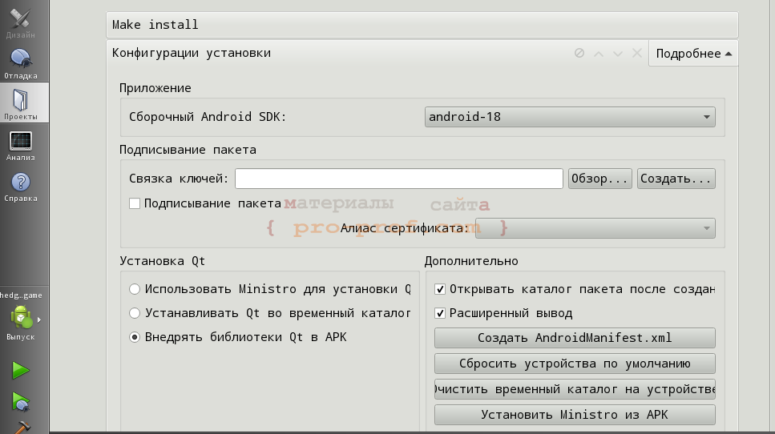
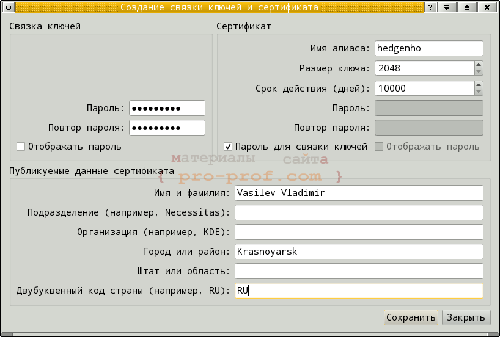
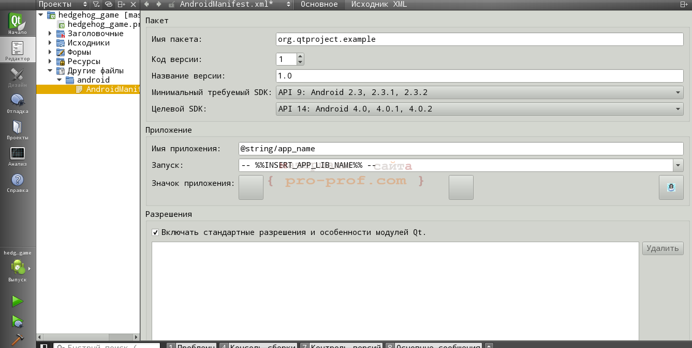
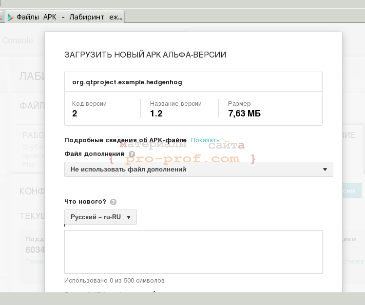
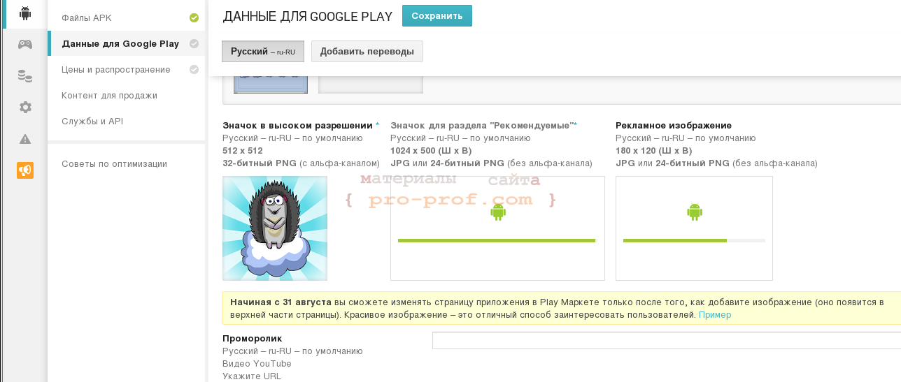

немножко доработал игрушку на Qt из предыдущей статьи, выложил ее на google play и решил описать всё, что мне показалось интересным в этом процессе: получение аккаунта разработчика, сборка приложения для google play, проблемы с файлами дополнений и отладка приложения.
Для того, чтобы размещать приложения на площадке гугла, надо иметь аккаунт разработчика для google play [2]. Регистрация стоит денег (в районе 900 рублей), которые требуют переводить с банковской карты типа Visa, MasterCard или некоторых другие. У меня было 2 банковских карты — зарплатная MasterCard и Visa Momentum. Обе не подошли, пришлось заказывать новую карту Visa Classic (заняло 2 недели).
Сборка Qt-приложения для google play
До того, как выложить игру на маркет, я собирал .apk-файл для android, копировал его на телефон или передавал товарищам. Несмотря на то, что я использовал тип сборки выпуск (release), почему-то получался файл с префиксом debug и я не придавал этому значения,пока гугл не сообщил, что отладочная версия его не устроит. Для сборки релизной версии не достаточно установить галочку «выпуск» в настройках проекта, надо покопаться в настройках установки (проекты->run->конфигурация установки).

В настройках установки можно выбрать установку Ministro — тогда ваше приложение будет «весить меньше», но при первом запуске будет устанавливать Ministro, которое подгрузит нужные библиотеки, это удобно при отладке приложения на своем телефоне. Установка во временный каталог тоже используется при отладке, а для выпуска приложения на маркет надо внедрять библиотеки в .apk-файл.

У вас никак не получится собрать релиз без подписывания пакета, а для этого нужно создать связку ключей (keychain), щелкнув соответствующую кнопку в окне конфигурации установки.

Создание связки ключей и сертификата
В появившемся окне я ввел только пароль и персональные данные, остальные поля оставил со значениями по умолчанию. Теперь при сборке у вас должна получаться релизная версия, но при загрузке на маркет, вы будете получать ошибку о том, что приложению надо установить иконку (добавлен иконок на сайте маркета тут не при чем).
Для добавления иконки нужно создать файл манифеста (кнопкой на экране конфигурации установки).

Файл манифеста можно редактировать как руками (это .xml-файл), так и специальным инструментом, встроенным в Qt Creator. В файле манифеста нужно указать:
Теперь приложение соберется для выпуска и .apk файл можно будет загрузить на маркет.

К загруженному приложению нужно добавить иконки, рекламные материалы и не менее двух скриншотов. Если ваше приложение использует много ресурсов (музыки, видео, …) и занимает много места, то ресурсы могут быть вынесены в файлы дополнения (об этом я напишу дальше чуть подробнее).

Загрузка иконок и рекламных изображений
После этого приложение можно опубликовать как альфа-/бета-версию, нагнать тестеров, а затем повысить до рабочей версии.
Файлы дополнения на Android
В игрушку я добавил меню, позволяющее выбрать уровень. Перед тем, как выкладывать приложение на маркет, я прочитал про файлы дополнений. Прочитал плохо, отсюда появилась проблема — я захотел обновлять приложение изменяя лишь файл дополнений (я подумал, что пользователю приятнее скачать несколько килобайт файла с описанием уровней, чем 10 мегабайт приложения), но это оказалось невозможно. Изменить файл дополнения можно лишь изменив .apk-файл, который оно дополняет, при этом обязательно изменится версия приложения (указанная в файле манифеста).
Можно попытаться найти обходные пути — например, хранить файл с описанием уровней на каком-нибудь сервере в интернете, но тогда приложение не будет автоматически обновляться (как это делается через google play). Пользователь не узнает о новых уровнях, пока не откроет приложение в то время, когда будет иметь доступ к интернету и сервер с файлом уровней будет доступен. В общем, лучше так не делать.
Пока я возился с дополнениями, я столкнулся с еще одной проблемой — при загрузке, оно переименовывается и размещается далеко не в том же каталоге, что и .apk файл. Чтобы обратиться к нему, надо будет сначала получить путь к каталогу с дополнениями, а это можно сделать с использованием QtAndroidExtras. В общем, это не так красиво, как хотелось бы и я не стал заморачиваться.
Тестирование приложения на google play
Очень понравилась организация тестирования на google play. У приложения есть 3 стадии:
Ссылку на тестирование я разместил на нескольких тематических сайтах [3, 4, 5], игрушку попробовали, нашли один баг и даже приложили архив с забавным звуком топота ежика. В общем, я думаю, что публиковать ссылки на приложение нужно везде, это поможет сделать программу лучше.
Ссылки по теме: